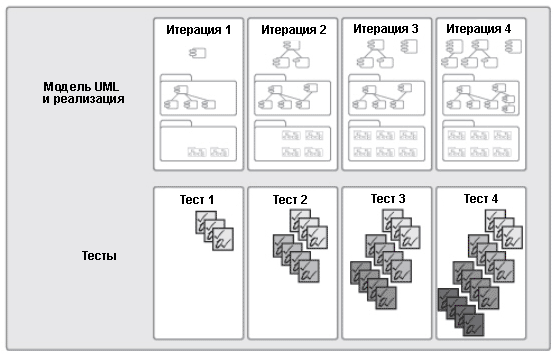

| Концепция: Постоянное внимание к качеству |
 |
|
ОбсуждениеДостижение качества - это не просто "соответствие требованиям" либо создание продукта, соответствующего потребностям и ожиданиям пользователя. Качество также включает идентификацию величин и критериев, демонстрирующих достижение качества, и реализацию процесса, который гарантирует, что продукт, созданный в этом процессе, достиг необходимого уровня качества, процесса, который можно повторить и которым можно управлять. Усилий одной лишь группы испытателей недостаточно для достижения высокого качества; за качество должна отвечать вся проектная группа. Все члены проектной группы должны уделять внимание качеству на всех этапах жизненного цикла:
Если возникают сложности с качеством, все члены проектной группы должны быть готовы помочь в их преодолении. Одно из основных достоинств итерационной среды разработки заключается в том, что она позволяет рано начать и непрерывно проводить тестирование, как показано на следующей иллюстрации. Учитывая то, что разработка проекта начинается с важнейших функций, к моменту завершения проекта основные компоненты разработанного программного обеспечения будут находиться в рабочем состоянии в течение длительного времени, а значит и будут тестироваться уже в течение длительного времени. Поэтому нет ничего удивительного в том, что большинство организаций, внедривших итерационный процесс разработки, считают повышение качества разрабатываемых продуктов главным осязаемым достоинством нового процесса. 
Тестирование начинается рано и увеличивается в объеме в ходе каждой итерации В процессе разработки приложения следует постепенно автоматизировать тестирование, поскольку это позволяет раньше обнаруживать ошибки с минимальными затратами. Еще при проектировании системы нужно задуматься о том, как она будет тестироваться. Правильные решения на проектной стадии позволяют значительно упростить автоматизацию тестирования. Кроме того, может появиться возможность создавать тесты непосредственно из моделей проекта. Это позволяет сэкономить время, упрощает раннее начало тестирования и повышает качество тестирования за счет минимизации количества ошибок в программном обеспечении тестирования. Автоматизация тестирования на протяжении многих лет была целью многих разработчиков, и в частности, разработчиков динамичного программного обеспечения, где очень важно сплошное тестирование кода и где сначала создаются тесты, и только потом - код (разработка с приоритетом тестирования). |
© Copyright IBM Corp. 1987, 2006. Все права защищены.. |